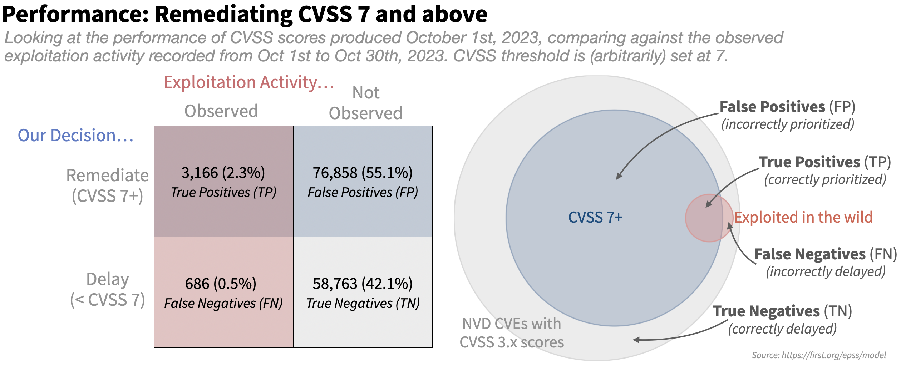
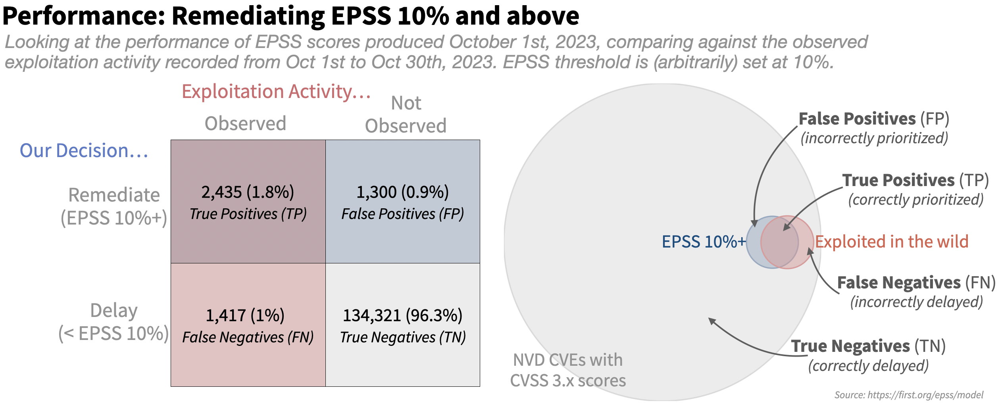
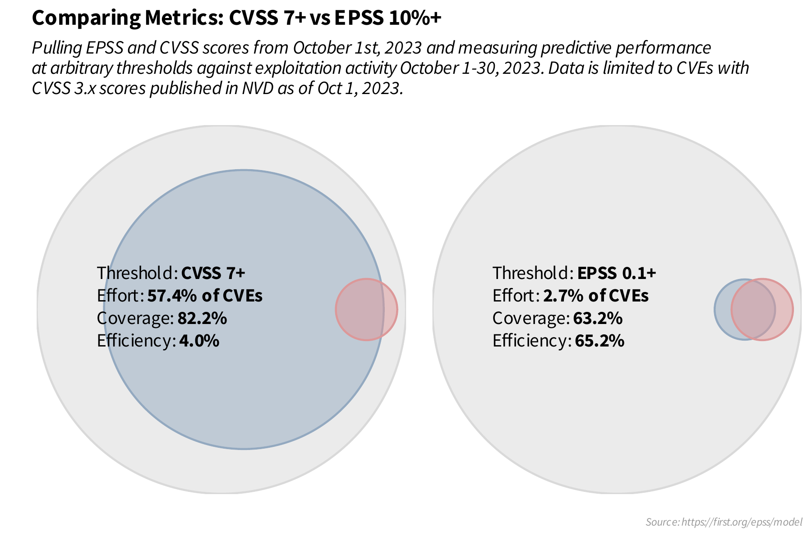
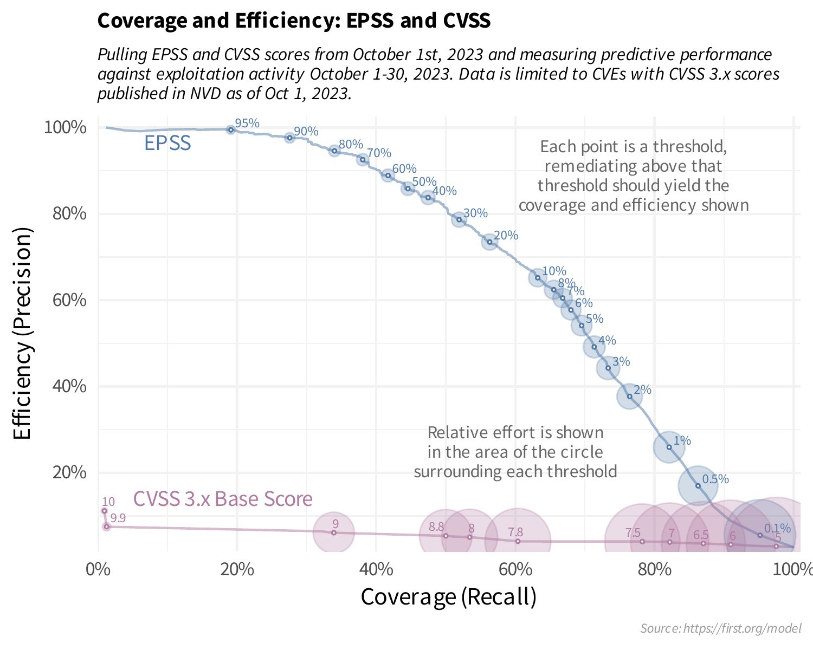

-
-
-
-
-
-

Copyright © 2015—2026 by Forum of Incident Response and Security Teams, Inc. All Rights Reserved.
How EPSS Works
EPSS is a daily estimate of the probability of exploitation activity being observed over the next 30 days. It is designed from the ground up to make the best use of all of the information available and it does this in five steps:
The Steps
-
1
Collect as much vulnerability information as we can from a variety of sources.
-
2
Collect evidence of daily exploitation activity.
-
3
Train a model: discover/learn the relationship between the vulnerability information and the exploitation activity.
-
4
Measure the performance of the model, tweak and repeat step 3 to optimize the model.
-
5
On a daily basis: refresh the vulnerability information (step 1) and use the model (step 3) to produce daily estimates of the probability of exploitation in the next 30 days for each published CVE.
We will walk through these steps below. For those wanting to know more, a detailed explanation of the background and rigor put into EPSS is covered in the latest published EPSS paper.
Vulnerability Information
Collecting vulnerability information is all about gathering data that we hope will help us answer the question, "What makes a vulnerability more (or less) likely to be exploited?"
Luckily, we don't have to know the answer, nor do we have to estimate any weights for the data we collect. The modeling in step 3 (in combination with the exploitation activity in step 2) will figure out how different sources of information help explain the exploitation activity we have observed. The more information we can collect the better, as more detail and variety in the data may help the model discover more and more subtle patterns about which vulnerabilities are likely to be exploited.
The vulnerability information we collect:
Vendor
(CPE, via NVD)
Age of the vulnerability
(Days since CVE published in MITRE CVE list)
References with categorical labels defining their content
(MITRE CVE List, NVD)
Normalized multiword expressions extracted from the description of the vulnerability
(MITRE CVE List)
Weakness in the vulnerability
(CWE, via NVD)
CVSS metrics
(base vector from CVSS 3.x, via NVD)
CVE is listed/discussed on a list or website
(CISA KEV, Google Project Zero, Trend Micro's Zero Day Initiative (ZDI), with more being added)
Publicly available exploit code
(Exploit-DB, GitHub, MetaSploit)
Offensive security tools and scanners: Intrigue, sn1per, jaeles, nuclei
As EPSS evolves, this list will certainly be updated and expanded.
Another important consideration within EPSS (and all of these data points) is that we are meticulous about collecting timing information. We want to know when information is published, added to lists or otherwise affects the threat landscape. It's not enough to know that a module was added to metasploit for a particular CVE, we need to know when it was added so we can look at the exploitation activity in the wild before and after the metasploit module was added. The attention to the timing applies to all of our data sources and it is especially important in the exploitation activity which we talk about in the next section.
Exploitation Activity
Feedback enables learning, which is why we are focused on gathering and organizing feedback in the form of exploitation activity in the wild from our data partners. We are continuously working to expand the list of contributors - so if you work at or with any companies or vendors that have exploitation data and they aren't one of our contributors, ask them to contribute!
Exploitation activity is evidence that exploitation of a vulnerability was attempted, not that it was successful against a vulnerable target. Which means we are collecting data from honeypots, IDS/IPS sensors and host-based detection methods and of course, we are always looking to expand data sources.
We learned early on that exploitation activity is not a permanent stream of activity that once started, will continue indefinitely. Exploitation is bursty, often sporadic and sometimes isolated, localized and ephemeral. Getting a simple report that a vulnerability has "been exploited" in the wild doesn't help us understand exactly when, how often or how prevalent the exploitation activity has occurred. We need to know exactly when it occurred so we can measure if it was before or after specific events and we need to know if it is still being exploited. Without specific timing information we would struggle to accurately measure the effect of the various events we are collecting about each vulnerability.
To highlight this point about timing, EPSS uses things like Google Project Zero and CISA KEV as vulnerability information and not as exploitation activity because their presence on the list is a single point in time (a vulnerability was added to a list) and always has occurred in the past (since EPSS is always looking forward to the next 30 days). By monitoring and collecting that information, we can build up an understanding of what happens after the vulnerability is added to the website or list. Perhaps listing on CISA's KEV list makes it less likely that attackers will use those CVEs moving forward since defenders may focus on remediating those before others. Maybe Google Project Zero is raising enough awareness that the zero-days end up less of a target once they reach the n-day status of a published CVE. Maybe both lists are raising awareness among the attackers and we may observe increased exploitation activity days or months after they were added to the list(s).
Detailed exploitation activity along with the daily timing of that activity create the feedback loop that we leverage against the vulnerability information to train up a model.
EPSS modeling
EPSS leverages machine learning to identify patterns and relationships between the vulnerability information and the exploitation activity that we have collected over time. We spend quite a bit of time on this step because we want to be sure the model is learning enough (performing well) but not too much (overfitting).
Model generation is tightly integrated with measuring the performance of the model. We will generate a model and measure its performance and repeat this over and over until we identify and maximize the effect of various permutations. For example, should we include all of the CWE's (there are nearly 600 unique CWE's used in NVD) or do we get a better model if we attempt to normalize the CWEs up to a specific view of parent nodes? What if we use two years of historical data instead of one year, or maybe six months? What if we tweak various model parameters on how fast or conservative the model learns? All of these questions can be answered by generating models and measuring the performance of that model (and repeating). Rather than focus on the modeling here, we will actually spend a lot more time focusing on measuring performance since that's what matters for using EPSS.
Predicting the Future
Measuring performance may seem impossible at first glance. After all, we are making predictions about the future and the future hasn't happened yet, right? How can we measure performance for something that hasn't happened yet? Recall that we are meticulous about the timing of things. Since we collect information about when information is published or when events occur, we can construct our "state of knowledge" at any point in time. This enables us to go back in time, reconstruct what we knew as of that point, even train a model and make predictions about "future" events (future according to the model, but it's in the past for us).
Here's how it works in practice, EPSS is currently trained on 12 months worth of historical data. In order to test the performance on "future" data, we actually build those 12 months starting at 14 months ago and train the model on 12 months of data up to 2 months ago. This leaves us 2 months of "future" data that the model has never seen and knows nothing about. We can test all sorts of variations on models and data sources and we can see how well it will perform in the "future". We can even go back further and test how the model may degrade over time. Maybe the threat landscape shifts so often and so quickly that the model will be terrible in six months? These are all things we can (and have) tested. This approach and many other details about how we performed feature selection and engineering as well as model optimization are covered in our latest paper.
A Note on Prediction
When most people hear "prediction" they may think of a mystic with a crystal ball who makes vaguely-specific statements about the future. Maybe you expect EPSS to tell you exactly what will and what won't be exploited and when. But that just isn't possible and anyone who makes that claim isn't being honest. One analogy often used is in gambling (probability theory was born from games of chance). Nobody can tell you which number will hit at the roulette table, nor predict which hands you will win at the blackjack table. But we can talk about the probability of each, and as that blackjack game unfolds we can update the probability with information observed on the table. This is why the output of EPSS is a probability. All we can say about vulnerability exploitation is that some of the vulnerabilities are more likely to be exploited than others, that's it, that's all EPSS is saying. EPSS is trying to provide information to practitioners that hopefully gives them an edge, that ability to play the odds and hopefully make proactive moves against attackers before they make those moves. Be careful not to compare any predictive system against perfection, instead compare against alternatives. While it'd be great to be perfect, in reality we need to identify the best strategy available to us and then try trusting it for a while.
Model Performance
This is the good stuff. In order to measure performance we need two (perhaps obvious) things: our estimate of future events and feedback on whether or not those future events actually happened.
Let's walk through an example and create a simple prioritization strategy (or model) that people are familiar with and prioritize all CVEs with a CVSS base score of 7 and above. We will talk later about measuring performance across a range of numbers, but for now, we will just make a binary choice of remediating CVSS score of 7 or above and delaying remediation for anything else and we will compare that against the outcome (observed exploitation activity). This gives each vulnerability two different attributes: if we prioritized or not, and if it had exploitation activity or not. Which means each vulnerability can be labeled with one of four categories, as shown in the figure below. To put numbers to this: As of October 1st, 2023, NVD has published 139,473 CVSS 3.x scores for published CVEs. In the following 30 days (Oct 1 - Oct 30th), we observed 3,852 unique CVEs (with CVSS 3.x scores) with exploitation activity (about 2.7%). Note that we saw a lot more CVEs exploited than that in October, but we are measuring CVSS here and so we limit to those with CVSS 3.x scores. For those 139-thousand we can construct a 2x2 table with the two variables (left), and we can visualize the proportions with a venn diagram (right).

The large gray circle represents all published CVEs with an NVD-assigned CVSS 3.x score, and all of the CVEs that were scored with 7 or higher with CVSS are shown in blue (our "strategy" says we should prioritize these). And finally all of the CVEs that we observed as being exploited in the following 30 days are shown in red (these are the ones we should have prioritized).
Key Terms
True positives (TP)
are the good decisions — the prioritized vulnerabilities that we also observed exploitation activity against in the wild. This is where the blue circle of prioritized vulnerabilities overlaps with the red circle of exploited vulnerabilities.
False positives (FP)
are vulnerabilities that were prioritized, but not exploited. These decisions represent potentially wasted resources and are in the blue circle of prioritized vulnerabilities that did not overlap with the red circle of exploited vulnerabilities.
False negatives (FN)
are vulnerabilities that were not prioritized but were observed to be exploited in the wild. These are the vulnerabilities in the red circle not being overlapped by the remediated vulnerabilities in the blue circle.
True Negatives (TN)
are vulnerabilities not prioritized and not exploited, these are the vulnerabilities in the outer gray circle that were neither remediated nor exploited in the wild.
As the figure above shows, the strategy to remediate based on CVSS 7+ prioritizes a large portion of those published CVEs (blue part overlapping the gray) and produces many false positives (the blue part not overlapping the red) and still leaves many of the exploited vulnerabilities open and waiting to be remediated (the red not overlapped by the blue).
Let's compare this to EPSS with a completely arbitrary cutoff set at 10% (Note we say "arbitrary" here because 10% is not an official EPSS threshold, nor any sort of statement about where you should set a threshold. You can use 10% if you'd like, but just know we neither endorse nor oppose this as a threshold and here it is an arbitrary number that we happen to chose for this example.)

The first obvious difference between the two is the size of the blue circle, or the amount of effort each strategy would dictate. With an EPSS threshold set at 10%, the effort is greatly reduced. We also see the False Positives greatly reduced, which is a good thing, but it appears to be at the expense of some True Positives.
Looking at the numbers in the tables is nice but perhaps a little confusing, four intertwined and connected variables is a little much to really determine value and/or performance of any given strategy. We can simplify this table down to two numbers that most organizations will want to track over time: efficiency and coverage and of course we also want to keep an eye on effort, since that is heavily tied to staffing, resources and budgets.
Effort, Efficiency and Coverage
Using these four categories (TP, FP, FN, TN) we can derive three more meaningful metrics, what we've termed as effort, efficiency and coverage. The last two, efficiency and coverage, are also referred to as precision and recall respectively.
Effort is measuring the proportion of vulnerabilities being prioritized. Research by Cyentia and Kenna Security (now part of Cisco) has shown that most organizations are able to remediate an average of 10-15% of their open vulnerabilities per month, this is something to keep in mind when comparing different strategies and the time/resources they would demand of your stakeholders.
Efficiency considers how efficiently resources were spent by measuring the percent of prioritized vulnerabilities that were exploited. In the above diagram, efficiency is the amount of the blue circle covered by the red circle. Prioritizing mostly exploited vulnerabilities would be a high efficiency rating (resources were allocated efficiently), while prioritizing perhaps random or mostly non-exploited vulnerabilities would result in a low efficiency rating. Efficiency is calculated as the number of exploited vulnerabilities prioritized (TP) divided by the total number of prioritized vulnerabilities (TP+FP).
Coverage considers how well is the percent of exploited vulnerabilities that were prioritized, and is calculated as the number of exploited vulnerabilities prioritized (TP) divided by the total number of exploited vulnerabilities (TP + FN). In the above diagram, coverage is the amount of the red circle covered by the blue circle. Having low coverage indicates that not many of the exploited vulnerabilities were remediated with the given strategy.
These three variables are intertwined. Within a single strategy, getting better coverage comes with more effort and lower efficiency, while improving efficiency often lowers effort and coverage. That trade off can be broken by finding an improved prioritization strategy, which is why it can be so important to track these metrics and compare across different strategies.
We can return to the examples above and calculate effort, efficiency and coverage. The effort for a strategy that remediates CVSS 7 and above is 57.4% ((tp + fp) / (tp + fp + tn + fn) or 80024 / 139473), coverage is 82.2% (tp / (tp + fn) or 3166 / (3166 + 686)) and the efficiency is 3.96% (tp / (tp + fp) or 3166 / (3166 + 76858)). For the EPSS strategy of 0.1 and above we have an effort of 2.7% (3735/139473), coverage of 63.2% (2435 / 3852) and efficiency of 65.2% (2435 / 3735). Visually this is shown with the two venn diagrams next to each other:

Measuring Performance Across all Possible Scores
EPSS has never published guidance around thresholds that everyone should use. There is no universal "critical" or "high" that we could agree on. Hopefully breaking out and understanding measurements like effort, efficiency and coverage helps explain why.
Those thresholds represent statements of risk tolerance and different organizations will obviously approach vulnerability prioritization differently based on their internal risk tolerance and resource constraints. Firms that do not have many resources (staff/budget) may wish to emphasize efficiency (at the expense of coverage) to limit their effort to get the best impact from the limited resources available. But for firms where resources are less constrained and security leans more towards mission critical, the emphasis can be on getting higher coverage at the expense of both effort and efficiency.
With that in mind, thresholds are commonly used and sought after, so we can provide guidance about the ranges of effort, coverage and efficiency we may expect at different thresholds. Hopefully this will help you and your organization have an informed discussion around which thresholds may be right for you, your staff and your budget constraints.
A line plot is often described as a "point in motion". Given a range of possible thresholds, we can sequentially measure coverage and efficiency (and effort) at each threshold, put a point on a scatter plot and connect those points with a line. It should help us understand and visualize the tradeoff between coverage and efficiency at various thresholds.

Looking at the above plot may be a bit confusing at first, but focus in on CVSS 7 and EPSS 0.1 (10%). We already know a threshold set at CVSS 7 and above has a coverage and efficiency of 82.2% and 4% respectively, and that's where that particular point is in the horizontal (coverage) and vertical (efficiency). Same is true for an EPSS threshold at 10%, we calculated the coverage and efficiency to be 63.2% and 65.2% respectively and that's where that particular point is on the EPSS line. Looking at this plot, it should help you set your own thresholds. Maybe you have a limited budget and the most "critical" in your environment is set to EPSS 50% and above, providing coverage around 45% and efficiency around 85%. Maybe your organization has a much lower risk tolerance (and more budget) and your "critical" should be a much lower threshold, say 5% or maybe even 1%, the choice is all yours!